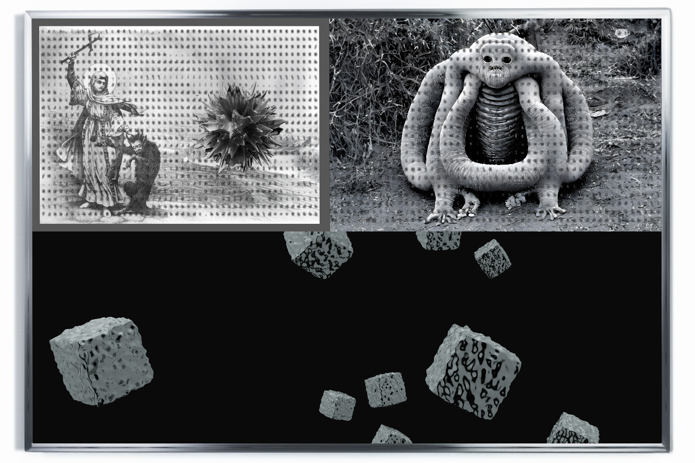
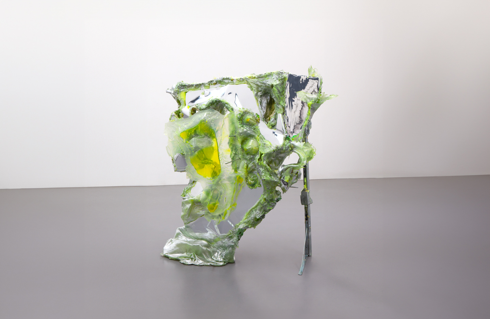
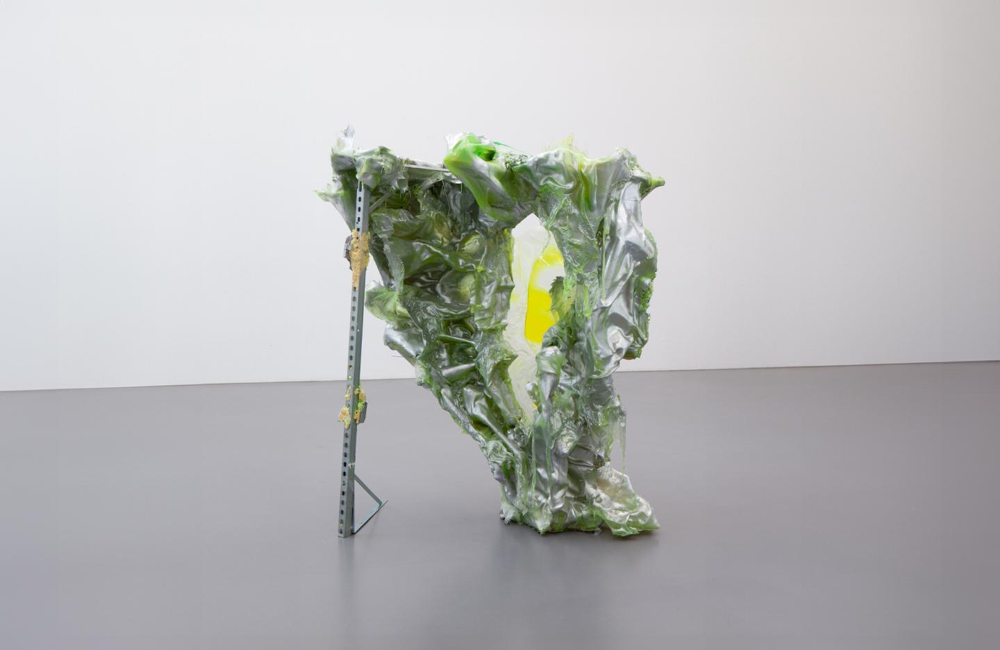
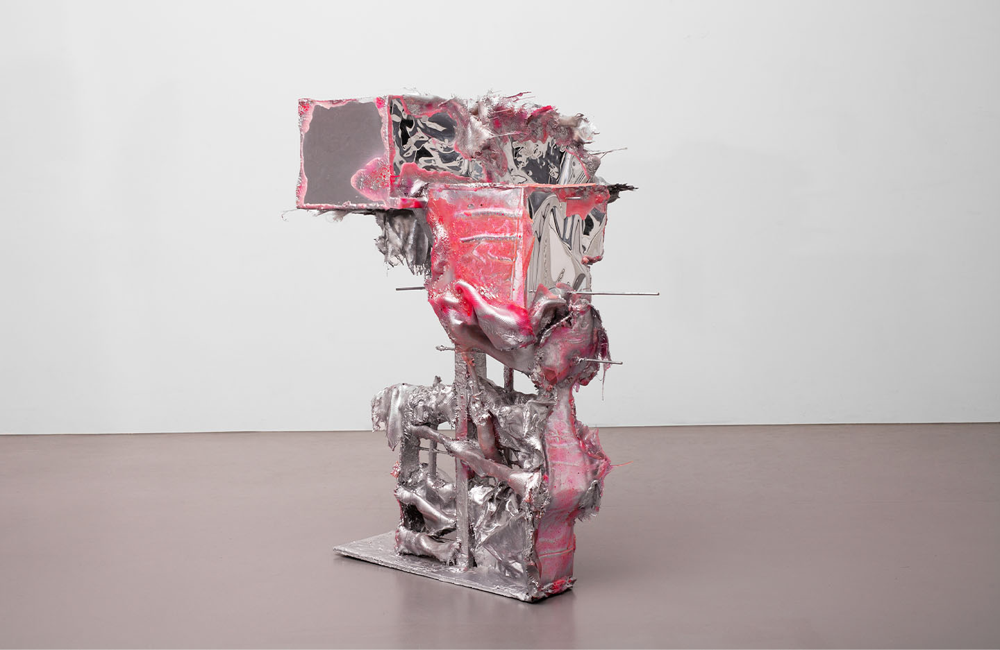
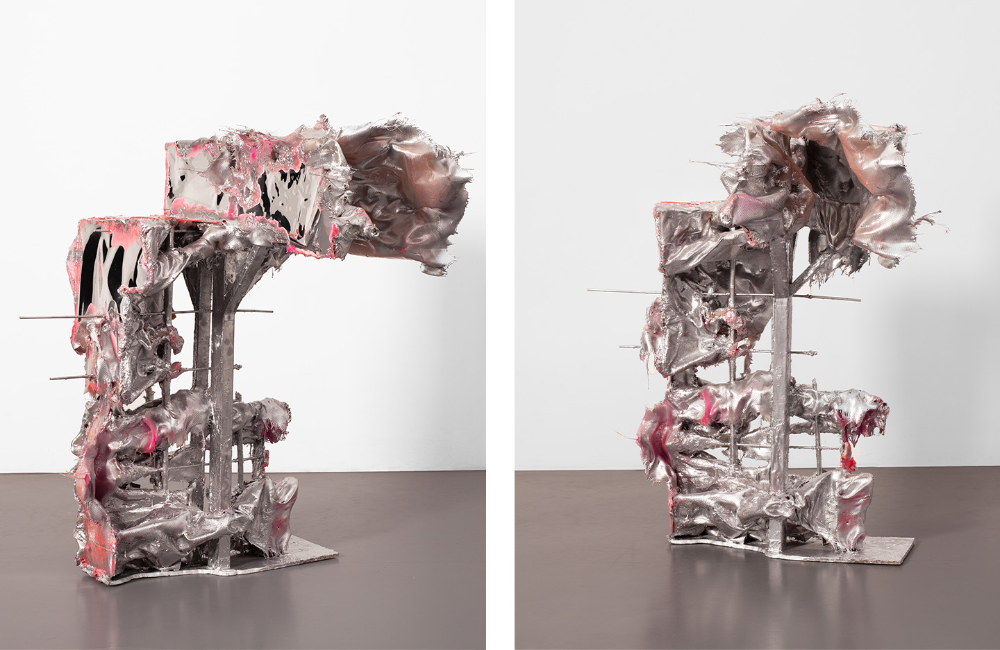
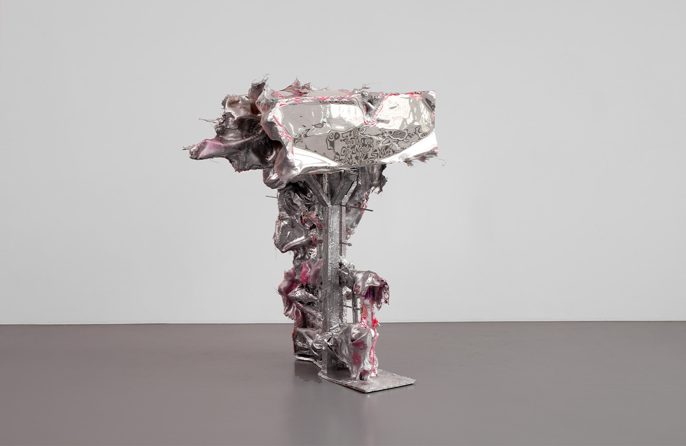
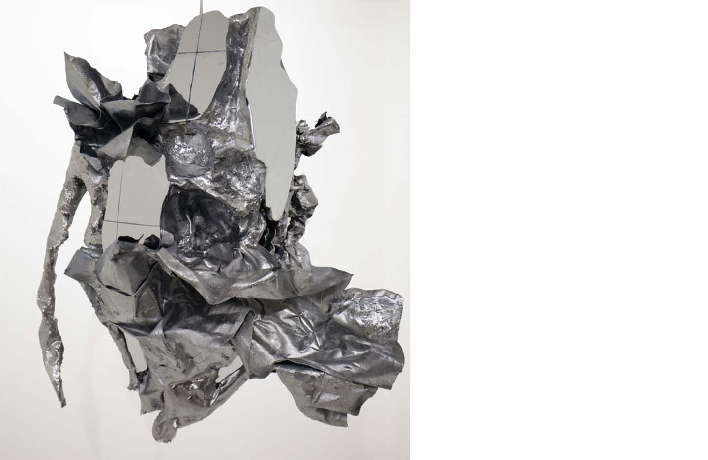
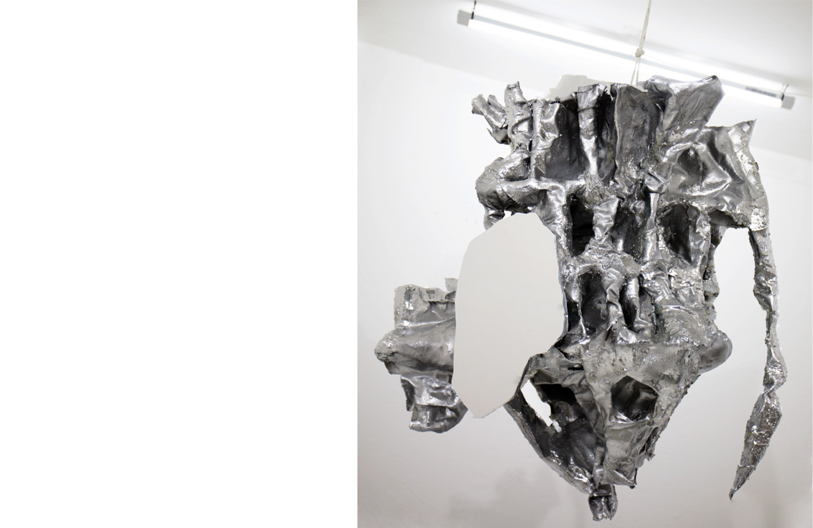
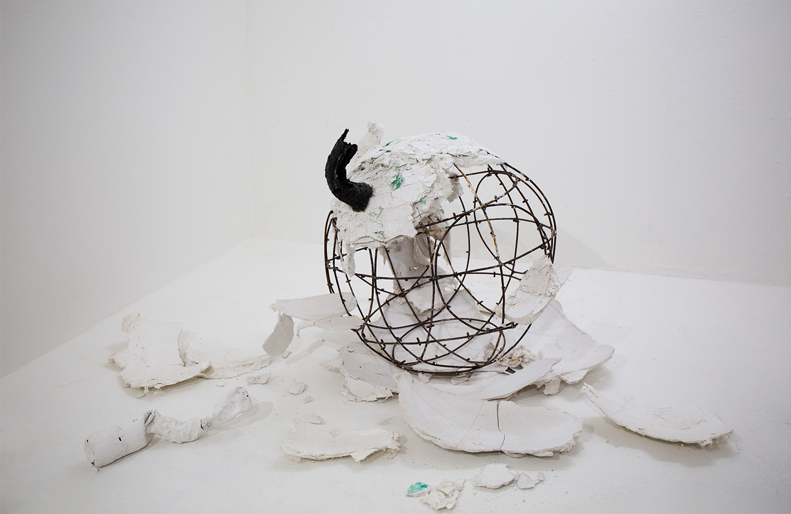
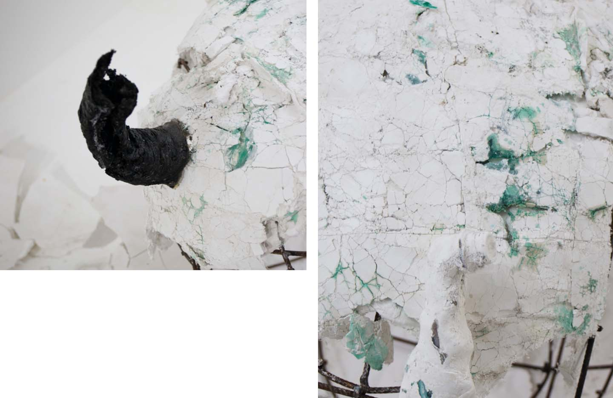

So Ends The Glorious World
Solo show at Number 1 Mainroad, 2025
The title So Ends the Glorious World takes its name from the Latin phrase Sic transit gloria mundi: "thus passes worldly glory," once spoken during papal coronation ceremonies as a reminder of the transitory nature of life and human ambition.
This reflection on impermanence is the basis of Selou Sowe's new installation at Number 1 Main Road. The work draws on the artist's experience of traveling through the vast high deserts of the Andes, where he encountered monumental rock formations shaped by millennia of erosion and the contrasting rigid geometry of urban business towers of the city center of Buenos Aires.
Sowe's installation explores the unpredictable organic complexity of natural systems and the constructed rationality of technocratic architecture.
The contrast between the irregular, time-sculpted surfaces of the stone and the mirrored, rectilinear façades of skyscrapers becomes a metaphor for the attempt of supremacist political structures to separate themselves from nature, and to impose dominance over both the natural world and other human beings. The underlying ideology of these systems is rooted in historical misinterpretations of religious texts and colonial hierarchies. Motivated by primal fears of insignificance, they attempt to transform the experience of impotence into fantasies of control and omnipotence.
Since complex systems are extremely hard to even partially predict and control, these structures must find ways to make such systems less complex so that unexpected consequences from interactions between the constituent parts become less likely and the illusion of mastery can be maintained.
In his essay Dead Zones of the Imagination, anthropologist David Graeber described bureaucracy as "an area of violent simplification," where living realities are flattened into measurable forms. The same logic animates the ideological systems Sowe examines: the will to reduce, to predict, to make life calculable.
According to these criteria, these systems establish an authority over what is deemed beautiful and right, and demonize or stigmatize anyone and anything that does not fit into this schema. Yet, as Sowe's installation suggests, such suppression inevitably fails. From destruction and restriction, new forms of life and meaning emerge. In this cycle of control and collapse, So Ends the Glorious World contemplates not only the decline of these rigid systems but also the possibility of emergence and renewal through the persistence of life's inherent complexity.



The Melody the Dragon Hums
Video installation: Found footage, self-made 3D animations, AI-generated images, 18:19 minutes, 4 × 55″ screens, 222 cm × 260 cm
Sculptures: left approx. h.210 cm × l.180 cm × w.90 cm, right approx. h.200 cm × l.150 cm × w.75 cm — epoxy resin, galvanized steel, barbed wire, concrete, effect foil
Watch video ↗
The title references the worn-out fairy tale of the shining knight who slays the evil dragon to achieve glory and honor: the triumph of good and beauty over evil and ugliness. It also evokes the imagery of Archangel Michael casting the dragon out of heaven.
White supremacist ideology often relies on misinterpretations of the Bible: the creation of the white man in God's image and the mandate to subdue the earth.
In contrast, the dragon represents the wretched of the earth, the untamed vastness and force of nature, and the feeling of being small and impotent that arises when faced with her might.
From this sense of impotence arises the desire for superiority and the will to dominate everything that embodies the dragon. To subjugate the infinitely complex nature of life, the subjugator must reduce its complexity and diminish its vitality.
As the knight charges at the dragon, lance aimed at her chest, the dragon, ancient beyond measure, hums an age-old melody. She knows full well that the frightened little man in his shiny armor is just a tiny part of herself, part of the eternal cycle of fragmentation, assembly, and emergence.


Madre de Dios (2023)
Approx. 230 cm × 180 cm × 150 cm — epoxy resin, galvanised steel, barbed wire, plaster, effect foil



Jörd (2021)
Approx. 150 cm × 100 cm × 80 cm — wood, plastic, wire, linen, epoxy resin, spray paint, synthetic foil, fibreglass


Del Polvo Vienes (2020)
Approx. 100 cm × 70 cm × 50 cm — wood, plastic, wire, linen, epoxy resin, spray paint


0G (2020)
Approx. 150 cm × 150 cm × 150 cm — steel, fragments of white sphere, black object